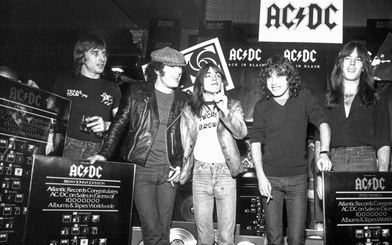

home > news > Fecha Posteo: 10 de diciembre de 2019 - Certificado "Back In Black" 25 Veces Platino En EE. UU.
Certificado "Back In Black" 25 Veces Platino En EE. UU.
10 Diciembre 2019
A "Back In Black" fue certificado 25x Platinum en los Estados Unidos por la RIAA el 6 de diciembre. El álbum fue certificado por última vez en 22x Platinum (22 millones de unidades vendidas) hace exactamente 12 años en diciembre de 2007. Desde febrero de 2016, las descargas y la transmisión se contabilizan en el proceso de certificación además de las ventas físicas reales, con 1.500 transmisiones de canciones equivalentes a 1 venta de álbumes. "Back In Black" es ahora el cuarto álbum más grande en la historia de Estados Unidos, detrás de The Eagles Greatest Hits (en 38x Platinum), Thriller de Michael Jackson (33x) y The Eagles "Hotel California (26x), superando a The Beatles White Album (en 24x), Led Zeppelin IV y The Wall de Pink Floyd (ambos a 23x).
Fuente: RIAA

Archivo
09 julio 2021: Lanzamiento Del Sitio Web Oficial De Bon Scott
03 mayo de 2021: Brian Johnson Actúa Con Foo Fighters En El Evento VaxLive
12 de abril de 2021: Brian Johnson Publicará La Autobiografía "The Lives Of Brian" El 26 De Octubre
07 de abril de 2021: Disco De Imágenes De AC / DC Para El Día De La Tienda De Discos 12 De Junio
07 de abril de 2021: Entrevista Recién Descubierta Con Bon Scott De 1976
09 de enero de 2021: Se Han Encontrado Pistas De Lost Fraternity Con Bon Scott
23 de noviembre de 2020: "Power Up" En El N. ° 1 En 20 Países
07 de octubre 2020: Nuevo Álbum De AC / DC "PWR / UP" A La Venta El 13 De Noviembre
05 de octubre 2020: Nuevo Single "Shot In The Dark" A La Venta El Miércoles
30 de septiembre de 2020: AC / DC Confirma Nueva Alineación
10 de diciembre de 2019: Certificado "Back In Black" 25 Veces Platino En EE. UU.
--sin noticias--
28 de noviembre de 2017: Malcolm Young Se Despidió En Sydney St Mary’s Cathedral